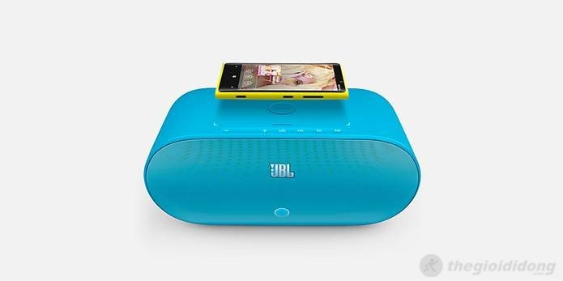

LUMIA 920
Giá Bán: 10.900.000
máy tính bảng: LUMIA 920 chính hãng nguyên seal
Bảo hành: Liên lạc tới số máy 0946076717
Đổi mới: Bảo hàng 1 đổi 1 trong 1 tháng nếu có lỗi
Tình trạng máy: Máy mới 100%
THÔNG SỐ KỸ THUẬT NỔI BẬT
-------------------------------------------
OS: iOS 10.2
TỔNG QUAN
CEO Tim Cook lên giới thiệu chiếc iPhone 5S tại sự kiện diễn ra đêm qua theo giờ Việt Nam
iPhone 5S vẫn sử dụng màn hình LED-backlit IPS LCD kích thước 4 inch với độ phân giải 640 x 1136 pixel,
mật độ điểm ảnh 326 ppi và được bảo vệ bên ngoài bằng kính Corning Gorilla Glass.
Cảm giác cầm LUMIA 920 trên tay khá dễ chịu khác hẳn LUMIA 920 Z3 và LUMIA 920 Z10. Dù có nặng hơn so với phần lớn các máy tính bảng hiện tại nhưng do có thiết kế bo tròn mà sản phẩm này không gây cấn tay. Nếu để ý bạn sẽ thấy mặt lưng của máy nhỏ hơn mặt trước một chút, các viền xung quanh được bắt chéo để không gây khó chịu khi cầm máy. Khi cầm các máy tính bảng có màn hình lớn và vuông vức như Xperia Z thì tay bạn sẽ đau nhưng các máy tính bảng sau này như và LG G2 thì không như vậy, chúng mềm mại, dễ cầm nắm hơn.
LUMIA 920 có truyền thống dùng màn hình và lớp kính có chất lượng cao trong quá khứ nhưng họ cũng đã không thật sự thành công khi mang AMOLED lên Q10, màn hình Q10 bị ám xanh khá nhiều. Trên , nhược điểm đó đã được khắc phục rất nhiều, màu khá chính xác, không rỗ nhiều và đặc biệt là rất trong do lớp kính và lớp phủ polarizer. Tất nhiên, với Super AMOLED và độ phân giải 720p thì màn hình này không quá mịn nhưng vẫn chấp nhận được.
LUMIA 920 đã nâng cấp chip xử lý trên lên SnapDragon S4 Pro 1,7GHz 2 nhân và chip đồ hoạ 4 nhân. Những thông số này không thật sự ấn tượng khi so với các nền tảng khác (chậm hơn SnapDragon 800 của Android 1 thế hệ và A7 của Apple 2 thế hệ) nhưng nó đủ sức cáng đáng nền tảng BBX. Có lẽ LUMIA 920 cũng đang gặp vấn đề trong việc hỗ trợ các con chip xử lý mới như Microsoft Windows Phone. Trải nghiệm cho thấy S4 Pro 1,7GHz đã phần nào khắc phục tình trạng lag nhẹ của Z10. Mình vẫn chưa thật hài lòng với nhưng nó đủ tốt để không gây khó chịu cho chúng ta.
Pin trên được nâng lên 2880mAh. Theo lời chủ nhân của chiếc máy này thì anh ấy có thể xài thoải mái, chat Facebook và BBM liên tục trong cả ngày và nếu xài ở cường độ bình thường thì pin trụ được 1,5 ngày. Hiện tại vẫn là bản thử nghiệm nên mọi thứ vẫn có thể cải thiện khi bán ra vào tháng 10. Camera cũng đang thử nghiệm nên mình không nhắc nhiều tới nó.

OS: LUMIA 920 OS 10.2
CPU 1.7GHz hai nhân, Qualcomm Snapdragon S4 Pro
Màn hình: 5" Super AMOLED, 1280 x 720
Camera: 8MP, f2.2 với đèn flash LED, camera trước 2MP
RAM: 2GB
Bộ nhớ trong: 16GB
Micro USB, Micro HDMI Out
WiFi, NFC, DLNA
Pin: 2880mAh
Mỏng: 9,4mm